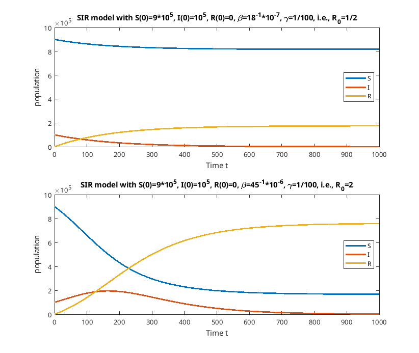

The SIR model for infection disease
In the present page we numerically solve the SIR model for infection disease of the form
\begin{align*}
\frac{dS}{dt}
& =
-\beta IS,
\\
\frac{dI}{dt}
& =
\beta IS - \gamma I,
\\
\frac{dR}{dt}
& =
\gamma I,
\end{align*}
where \(S(t)\), \(I(t)\) and \(R(t)\)
are real-value unknown functions of \(t \in \mathbb{R}\),
and \(\beta\) and \(\gamma\) are positive constants.
In mathematical epidemiology,
\(t\) is time,
\(S(t)\) is the number of susceptible people,
\(I(t)\) is the number of people infected,
\(R(t)\)s the number of people
who have recovered and developed immunity to the infection,
\(\beta\) the infection rate,
and \(\gamma\) is the recovery rate.
By using MATLAB we draw a solution to the initial value problem for the SIR model
with some appropriate initial data.
See
sir_model.m
for the detail.
